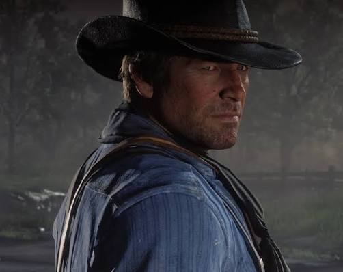

Геймплей
У RDR 2 поєднуються сюжетні місії, дослідження великого відкритого світу, верхова їзда, полювання, риболовля та перестрілки з уповільненням часу («Мертве око»).
- Подорожі на коні через ліси, гори, прерії та болота
- Полювання, збір трофеїв і табір банди
- Вибір у діалогах і система честі персонажа
Факти
Світ і деталі
- Події розгортаються у 1899 році наприкінці епохи Дикого Заходу
- НПС мають свій розпорядок дня та реагують на вчинки гравця
- Погода, бруд і втома впливають на героя й коня
Атмосфера
- Великий набір різної зброї — від револьверів до гвинтівок
- Посиденьки біля вогнища, карти та покер у таборі
- Глибока драматична історія про вірність і зміни
Герой

Артур Морган
Головний герой гри — досвідчений стрілець і один із найвідданіших членів банди Датча ван дер Лінде. Він уміє виживати в дикій природі, веде щоденник і поступово переосмислює власні вчинки.
- Роль: головний протагоніст сюжетної кампанії
- Риси: влучність, витривалість і власний щоденник із малюнками
- Головна тема: вибір між старим життям і власною совістю